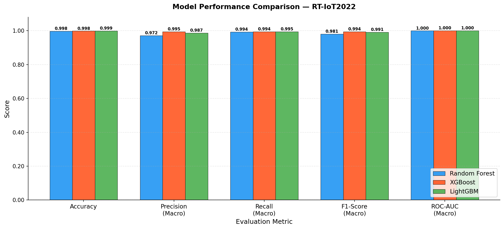
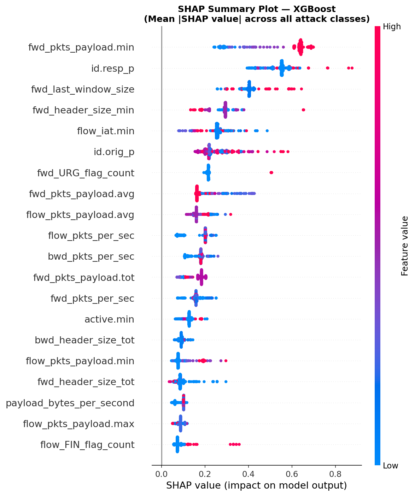
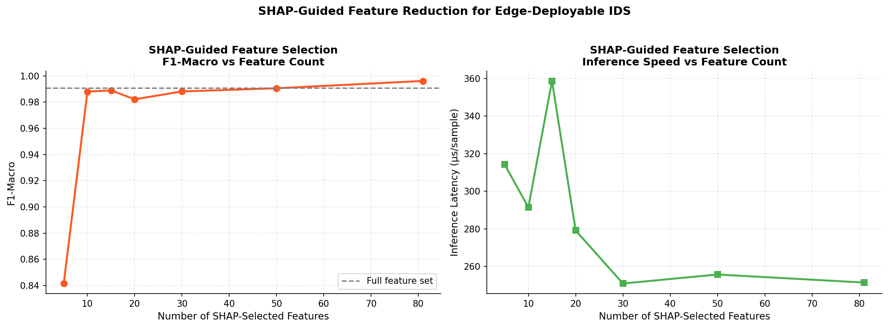

¹ University of Bechar, Algeria · ² University of Continuing Education, Algiers, Algeria
The digitalization of energy infrastructure exposes resource-constrained IoT field devices — smart meters, renewable energy sensors, and building automation nodes — to escalating network intrusion threats, making lightweight and interpretable detection a critical operational requirement. This work presents XAI-IDS, a framework combining Random Forest, XGBoost, and LightGBM with SHAP TreeExplainer to deliver global, local, and per-class feature-level explanations on the RT-IoT2022 benchmark.
All three models achieve macro F1 above 0.98; McNemar's test confirms that pairwise accuracy differences are statistically non-significant (p > 0.05), shifting the primary deployment concern to computational cost rather than predictive performance. A four-feature SHAP consensus — forward payload minimum, destination port, average forward payload, and packet rate — maps directly onto the flow statistics that deviate under attacks targeting IoT protocols such as MQTT. SHAP-guided feature selection reduces input dimensionality by 88% with a macro F1 loss below 0.007, supporting deployment on constrained IoT edge gateways.
| Model | Accuracy | Precision (Macro) | Recall (Macro) | F1 (Macro) | ROC-AUC |
|---|---|---|---|---|---|
| Random Forest | 0.9983 | 0.9717 | 0.9936 | 0.9815 | 0.9999 |
| XGBoost | 0.9984 | 0.9946 | 0.9943 | 0.9944 | 1.0000 |
| LightGBM | 0.9987 | 0.9870 | 0.9952 | 0.9908 | 0.9999 |


